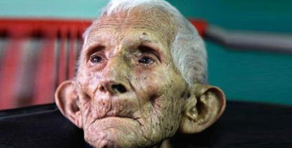

Le vieux monsieur
Ce vieux monsieur meurt seul dans un hospice, une infirmière trouve la lettre qu’il a laissé et fond en larmes...

Que voyez-vous, infirmières ? Que voyez-vous ?
À quoi pensez-vous lorsque vous me regardez ?
À un vieil homme grincheux, pas très sage, aux habitudes hésitantes et au regard perdu dans le lointain ?
Qui bave en mangeant et ne répond jamais aux questions.
Qui, lorsque vous criez « J’aimerais que vous fassiez un effort ! »
Semble ne pas réagir du tout à toutes ces choses que vous faites.
Un homme qui perd toujours une chaussette ou une chaussure ?
Qui, en résistant parfois vous laisse faire ce que vous voulez, pour le nourrir et le baigner et pour remplir ces longues journées ?
Est-ce que c’est à cela que vous pensez ? Est-ce que c’est ce que vous voyez ?
Alors ouvrez les yeux, infirmières. Car vous ne me voyez pas.
Je vais vous dire qui je suis, alors que je suis assis ici, alors que je vous obéis, alors que je mange ce que vous me donnez.
Je suis un enfant de dix ans. J’ai un père, une mère, des frères et des soeurs qui tous s’aiment beaucoup.
Je suis un garçon de 16 ans vif et motivé, qui n’a qu’un espoir : rencontrer au plus vite celle qu’il aimera.
Je suis un futur marié de vingt ans au coeur palpitant.
Je peine à me souvenir des voeux que j’ai promis d’honorer.
Maintenant âgé de 25 ans, j’ai désormais des enfants. qui ont besoin de mes conseils et d’un foyer heureux et sûr.
À 30 ans, mes enfants grandissent vite, unis comme les doigts d’une main par des liens qui devraient être durables.
À 40 ans, mes jeunes fils sont devenus grands et sont partis, mais ma femme est toujours à mes côtés pour voir que je ne leur en veux pas.
À 50 ans, à nouveau, des bébés jouent autour de moi.
À nouveau, il y a des enfants à la maison à ma bien-aimée et moi.
Le pire n’est plus à venir, il est déjà là. Ma femme n’est plus.
Je me tourne vers le futur. Je tremble de peur.
Car tous mes enfants ont désormais leurs propres petits.
Et je pense au temps qui passe et à tout l’amour que j’ai reçu.
Je suis désormais un vieillard et la nature est particulièrement cruelle.
La vieillesse est une mauvaise blague qui nous fait paraître stupides.
Le corps s’écroule. La grâce et la vigueur disparaissent.
Il ne reste plus qu’une pierre là où autrefois j’avais un coeur. Mais au fond de cette vieille carcasse, il reste un jeune homme, tapi dans l’ombre, et de temps en temps… mon coeur épuisé s’emballe lorsque je me souviens de tous les moments joyeux.
Je me souviens aussi des moments douloureux. Et j’aime et je vis de nouveau ma vie. Je repense à toutes ces années, bien trop peu nombreuses, bien trop vite parties.
Et j’accepte ce triste état de fait. Rien ne dure éternellement.
Ouvrez donc les yeux. Ouvrez les yeux, et regardez bien. Je ne suis pas un vieil homme grincheux.
Regardez de plus près… et admirez… MOI !!
Souvenez-vous de ce texte lorsque vous croiserez une personne âgée que vous aurez envie d'ignorer, sans faire l'effort de chercher l'âme d'enfant qui vit en son sein. Car un jour, nous aurons tous cet âge avancé !
Les choses les plus belles et désirables de ce monde ne sont ni visibles ni tangibles. Elles doivent être ressenties avec le coeur !
Cadre graphique original créé par Manola.
Adaptation et modernisation pour ce site par Frédéric.

Commentaires publiés
Bonjour,
Je passe sur le conseil d'une amie, le lis ce texte.... Un très beau texte et très émouvant.
Oui, nous deviendrons tous des personnes âgées.
Que dire de plus....... j'ai c'est de souffrir... bonne journée, bisous amitiés Puce
Florence
Posté le : 05/07/2021 à 10:58
Hello Fred, quel bien beau texte touchant et très interpellant
Je te souhaite un beau week-end, bises
Posté le : 03/07/2021 à 07:14
Merci pour ta visite Fred
Bon week-end
Arlette
Posté le : 02/07/2021 à 19:52
Bonjour Fred, merci de ta visite, nous avons beaucoup de beaux endroits à visiter au bord de l'eau, dont nous en sommes presque entourés. Dans Vaudreuil-Dorion la route principale est souvent au bord de l'eau, aux heures de pointe, ça me fait un beau paysage à regarder.Bisous et bon week-endAllison
Posté le : 02/07/2021 à 14:43
Bonjour cher Fred,
Emouvant texte, le photo aussi l'est.
Il vaut mieux bien vieillir mais ce n'est pas évident... Tout le monde vieillit, même les animaux. Personne n'y échapppe, c'est comme ça.
Passes une bonne journée et un agréable week-end, bisous amicaux
Florence
Posté le : 02/07/2021 à 09:18
Coucou Fred un texte qui fais voir la vérité en face on jeune insouciant puis l'âge avance et passe vite mais vieillir avec les sien autour on a encore de l'amour et sa lucidité et après on ne peut plus rien faire sauf ce souvenir des bon moments et attendre la fin c'est triste mais c'est la vie
bonne journée je file car kiné
bises
Posté le : 02/07/2021 à 08:30
Merci pour ce beau partage émouvant
Posté le : 02/07/2021 à 07:28
L'horloge biologique avance inéxorablement dès notre naissance.La perte de ses capacités physiques et intellectuelles est une angoisse.
Bonne soirée
Posté le : 01/07/2021 à 20:48
Coucou Fred dans le même esprit regarde sur Netflix "La vieille dame et sa camionnette " j'ai trouvé ça très poétique avec beaucoup d'humour anglais .
Bises bon jeudi !
Posté le : 01/07/2021 à 16:46
Je l'avais déjà vu mais il me met quand même les frissons ce texte chaque fois! Bisous
Posté le : 01/07/2021 à 15:38
Un texte réaliste et émouvant à la fois à méditer.
Merci Fred pour ce billet.
Bon après-midi.
Bise -violette
Posté le : 01/07/2021 à 14:23
Magnifique écrit!!!
Posté le : 01/07/2021 à 13:56
Emouvant article !
Bonne journée
Posté le : 01/07/2021 à 11:45
Coucou Fred, c'est un excellent partage, et oui on devra tous des personnes très âgées...Ma petite fille Chloé qui vient d'être reçue à son concours d'aide-soignante, son voeux s'occuper des personnes démiunies.
bon jeudi
Arlette
Posté le : 01/07/2021 à 10:25
Bonjour Fred, voila un très beau texte et tellement réaliste. je vois parfois des choses qui me font frémir. Les plus jeunes ne peuvent pas comprendre que les "vieux" quand ils sont dépendants des autres, des infirmières des aides soignantes sont souvent malmenés sans que cela soit fait exprès. Il faut du temps souvent pour réagir se lever il faut du temps aussi pour comprendre ce que l'on vous demande. Mais toutes ces aides sont toujours pressées car il y a d'autres personnes d'autres "vieux" à voir, il faut se dépêcher sinon elles se feront engueuler par leurs chefs car il faut aller vite de plus en plus vite. Le personnel soignant est souvent en sous effectifs par économie. Par contre les prix des maisons de retraites sont très élevées et de plus en plus, il faut faire du profit au détriment de ces personnes qui sont tributaires ou plutot prisonnières de ces soignants par force et ils doivent obéir se soumettre sans aucun état d'âmes de ce qu'ils ont pus être, les pauvres. je suis bien triste pour ceux qui sont obligés d'en passer par là. je parles bien sur d'une généralité mais il y a quelques exceptions heureusement.
Alors oui ton texte me parle car j'ai vu et entendu des choses sur ce sujet qui m'ont fait peur et je me dis "- pourvu que je ne me retrouve pas dans ces conditions là". Les "vieux" sont si vulnérables à la merci de quelques personnes frustrées qui les font souffrir, qu'elle tristesse et surtout qu'elle honte car elles aussi y passeront. Un petit sourire à une personne âgée vous ne pouvez pas savoir le bonheur que cela leur fait....
Posté le : 01/07/2021 à 09:56
bonjour Fred
que c'est beau et triste
dur de vieillir
belle journée et gros bisous
Elyci
Posté le : 01/07/2021 à 09:45
La vieillesse est parfois difficile , aussi bien pour le vieillard que pour la famille proche . Je reste avec le souvenir de mes parents qui ont soufferts énormément avant de s'envoler vers un monde meilleur
Amitiés
Posté le : 01/07/2021 à 09:14
Je commence à vieillir, et je garde toujours mon âme d'enfant.
Merci pour ce beau texte
Bisous
Allison
Posté le : 01/07/2021 à 09:10